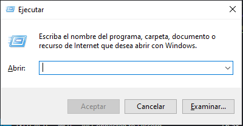

Archivos Temporales
Son archivos que se crean y utilizan temporalmente por programas y sistemas operativos para diversos propósitos. Estos archivos son necesarios para realizar ciertas tareas, pero no se mantienen de manera permanente.
Es recomendable borrar estos archivos temporales ya que quita almacenamiento del disco duro o unidad solida.
Como borrar
Para borra los archivos temporales es muy sencillo. Primero se tiene que ingresar al apartado de Ejecutar de Windows con la tecla Windows + R.
Para ello se tiene que escribir los siguientes comandos:
Una vez escrito los comandos ingresaremos a los archivos temporales.
Como Ultimo paso, solo toca borrar todos los archivos. Ten en cuenta que algunos archivo no podran ser borrados ya que pueden estar en uso.